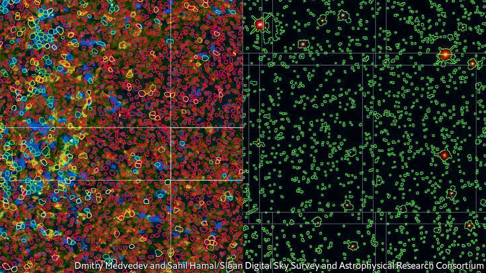

2021-05-13T15:22:14+00:00
癌症研究
像绘制宇宙地图一样绘制癌症地图
天文学技术正被应用于医学
过去二十年，巴尔的摩的约翰·霍普金斯大学的天文学家亚历山大·萨莱（Alexander Szalay）协助绘制了迄今为止最详尽的宇宙地图。他的原始材料来自于自2000年启动的斯隆数字化巡天项目（Sloan Digital Sky Survey）。到目前为止，这个项目已经测绘了整个天空的三分之一，观测了近10亿个天体。
项目所使用的望远镜位于新墨西哥州的一座山的山顶，通过记录抵达电荷耦合器件的光子来收集数据。光子在这里被转化为电信号，萨莱和他的同事们从中过滤掉干扰信号，用余下的部分确定望远镜看到的物体属于哪类、距离多远，从而将电信号转化成具体的图像。
现在，萨莱又在他的望远镜上加上了一台显微镜。他正与约翰·霍普金斯大学的同事、病理学家詹尼斯·陶贝（Janis Taube）合作，开发AstroPath。这个项目将萨莱的天文学知识和陶贝的病理学知识融合起来，打造一个系统来测绘癌细胞和癌组织，就像斯隆项目绘制宇宙的图像一样。
拿天文学做类比在萨莱是信手拈来。他将目前最常用的癌症影像检查方法与用哈勃太空望远镜观测宇宙做比较。前者的观察十分细致，但每次只看为数不多的几颗肿瘤。哈勃望远镜只能聚焦天空中有限的区域，但也就可以通过长时间曝光非常精确地记录下观测到的东西。
也因此，哈勃只观测了天球41253平方度总面积中的45平方度。相比之下，斯隆项目采用的方法更粗略，目前为止覆盖了天球的大约15000平方度。借助这种笼统而全面的方法，天文学家可以观察整个星系团以及它们之间的关系，从而在宏观层面了解宇宙的结构。
两种方法都有价值。但是，癌症生物学家使用第二种方法的时候要少于第一种，AstroPath有意消除这一差距。该项目使用的专门显微镜可以捕捉较大肿瘤切片组织的图像，并且可以在多种波长下进行。之后，斯隆项目所使用的数据分析技术会对这些图像进行分析。
具体来讲，AstroPath采用了一种叫做免疫荧光的方法来生成图像，方法是用抗体将荧光标签附着到特定种类的蛋白质分子上。这样就可以将这些蛋白质在整个肿瘤中的分布情况绘制出来，精确到每个细胞。AstroPath目前可以同时对二三十种蛋白质进行这样的操作。陶贝的远期目标是对20多种、数量达几百个的肿瘤开展类似的成像操作，以便对同类型和不同类型的肿瘤做比较。
目前，AstroPath已经扫描了超过2.26亿个细胞，它们来自三种肿瘤——肺癌，以及黑色素瘤和默克尔细胞癌这两种皮肤癌。萨莱指出，光是测绘这三种肿瘤要处理的像素就比整个斯隆项目迄今为止已处理的像素还要多。但这还只是个开始。他和陶贝希望最终能收集和处理的数据会是现在的1000倍。
陶贝则尤其希望AstroPath能够标记出一些分子来帮助她开发针对黑色素瘤和肺癌的血液测试，并让她更好地了解肿瘤如何对免疫疗法这种治疗形式做出反应。有些癌症能够抑制免疫系统的抗肿瘤活性。如果能阻止它们发挥这种能力，免疫系统就可以重返战场。她希望能够识别出一些标记物，例如一种叫做PD-1的物质的水平。PD-1是一种所谓的免疫检查点蛋白，能够预测患者是否会对免疫疗法有反应，以及如果有的话，确切来说是哪一种免疫疗法。
不过，该项目更宏伟的目标是以类似谷歌地图的形式将结果制作成一本癌症图册，向全世界开放。这样，任何感兴趣的肿瘤学家都可以查阅它，并得出与自己的研究兴趣和专业领域相关的结论。如果能够做到这一点，它就真的可以将癌症研究人员送上九天揽月了。
2021-05-13T15:22:14+00:00
Cancer research
Mapping cancer as if it were the universe
Techniques from astronomy are being applied to medicine
OVER THE past two decades Alexander Szalay, an astronomer at Johns Hopkins University in Baltimore, has helped create the most detailed maps of the cosmos yet made. His raw material comes from the Sloan Digital Sky Survey, which began in 2000. So far, this project has charted a third of the heavens and observed nearly 1bn astronomical objects.
The survey’s telescope, which sits on a mountain top in New Mexico, collects its data by recording the arrival of photons of light on a charge-coupled device. This turns them into an electrical signal that Dr Szalay and his confrères translate into a representation of reality by winnowing out the noise and determining, from what remains, what sorts of objects the telescope is looking at and how far away they are.
Now, Dr Szalay has added a microscope to his telescope. In collaboration with Janis Taube, a colleague at Johns Hopkins who is a pathologist, he is developing AstroPath. This is a project that combines his knowledge of astronomy with hers of pathology into a system which does for images of cancer cells and tissues what the Sloan survey does for images of the universe.
Dr Szalay, ever handy with an astronomical analogy, compares the most common current approach to the examination of images of cancers—which is to look in great detail, but at only a few tumours—to studying the universe using the Hubble Space Telescope. This instrument can focus on only a restricted area of the sky, but is then able to record what it sees with immense precision by spending lots of time taking long exposures.
As a consequence, the Hubble has surveyed only 45 of the 41,253 square degrees which constitute the celestial sphere. By contrast, the Sloan survey has so far covered, in a more cursory manner, about 15,000 square degrees of that sphere. This sweeping approach lets astronomers understand the universe’s large-scale structure by seeing entire clusters of galaxies and the relationships between them.
Both methods are valuable. But because fewer cancer biologists use the second than the first, AstroPath is designed to fill the gap. The specialised microscopes the project uses capture images of broad slices of tumours, and do so in multiple wavelengths. These images are then subjected to data-analysis techniques developed as part of the Sloan survey.
In particular, AstroPath employs a technique called immunofluorescence to make its images. This works by using antibodies to attach fluorescent tags to specific sorts of protein molecules. That permits the distributions of these proteins throughout a tumour to be mapped cell by cell. So far, AstroPath can do this simultaneously for between 20 and 30 proteins. Dr Taube’s long-term goal is to do likewise for hundreds of individual tumours of more than 20 different types, enabling comparisons to be made both within and between types.
Currently, AstroPath has scanned more than 226m cells from three types of tumour—lung cancer and two skin cancers, melanoma and Merkel-cell carcinoma. Dr Szalay points out that dealing with these three alone meant processing more pixels than the whole Sloan survey to date. But this is only a start. Eventually, he and Dr Taube aspire to collect and process 1,000 times more data than this.
For herself, Dr Taube particularly hopes AstroPath will flag up molecules that will help her develop blood tests for melanoma and lung cancer, and will improve her understanding of how tumours respond to a form of treatment called immunotherapy. Some cancers are able to put the brakes on the immune system’s anti-tumour activity. Disable this ability and the immune system can return to the fray. She hopes to identify markers, such as the levels of a substance called PD-1, a so-called immune checkpoint protein, that will be able to predict whether a patient will respond to such therapy—and, if so, precisely which sort of it.
The project’s wider aim, though, is to make the results available to the world as a cancer atlas in a format similar to Google Maps. Then, any interested oncologist can take a look and draw conclusions relevant to his or her own area of interest and expertise. If that can be done, it really will enable cancer researchers to reach for the stars. ■
2021-05-13T15:22:14+00:00
癌症研究
像繪製宇宙地圖一樣繪製癌症地圖
天文學技術正被應用於醫學
過去二十年，巴爾的摩的約翰·霍普金斯大學的天文學家亞歷山大·薩萊（Alexander Szalay）協助繪製了迄今為止最詳盡的宇宙地圖。他的原始材料來自於自2000年啟動的斯隆數字化巡天項目（Sloan Digital Sky Survey）。到目前為止，這個項目已經測繪了整個天空的三分之一，觀測了近10億個天體。
項目所使用的望遠鏡位於新墨西哥州的一座山的山頂，通過記錄抵達電荷耦合器件的光子來收集數據。光子在這裡被轉化為電信號，薩萊和他的同事們從中過濾掉干擾信號，用餘下的部分確定望遠鏡看到的物體屬於哪類、距離多遠，從而將電信號轉化成具體的圖像。
現在，薩萊又在他的望遠鏡上加上了一台顯微鏡。他正與約翰·霍普金斯大學的同事、病理學家詹尼斯·陶貝（Janis Taube）合作，開發AstroPath。這個項目將薩萊的天文學知識和陶貝的病理學知識融合起來，打造一個系統來測繪癌細胞和癌組織，就像斯隆項目繪製宇宙的圖像一樣。
拿天文學做類比在薩萊是信手拈來。他將目前最常用的癌症影像檢查方法與用哈勃太空望遠鏡觀測宇宙做比較。前者的觀察十分細緻，但每次只看為數不多的幾顆腫瘤。哈勃望遠鏡只能聚焦天空中有限的區域，但也就可以通過長時間曝光非常精確地記錄下觀測到的東西。
也因此，哈勃只觀測了天球41253平方度總面積中的45平方度。相比之下，斯隆項目採用的方法更粗略，目前為止覆蓋了天球的大約15000平方度。藉助這種籠統而全面的方法，天文學家可以觀察整個星系團以及它們之間的關係，從而在宏觀層面了解宇宙的結構。
兩種方法都有價值。但是，癌症生物學家使用第二種方法的時候要少於第一種，AstroPath有意消除這一差距。該項目使用的專門顯微鏡可以捕捉較大腫瘤切片組織的圖像，並且可以在多種波長下進行。之後，斯隆項目所使用的數據分析技術會對這些圖像進行分析。
具體來講，AstroPath採用了一種叫做免疫熒光的方法來生成圖像，方法是用抗體將熒光標籤附着到特定種類的蛋白質分子上。這樣就可以將這些蛋白質在整個腫瘤中的分布情況繪製出來，精確到每個細胞。AstroPath目前可以同時對二三十種蛋白質進行這樣的操作。陶貝的遠期目標是對20多種、數量達幾百個的腫瘤開展類似的成像操作，以便對同類型和不同類型的腫瘤做比較。
目前，AstroPath已經掃描了超過2.26億個細胞，它們來自三種腫瘤——肺癌，以及黑色素瘤和默克爾細胞癌這兩種皮膚癌。薩萊指出，光是測繪這三種腫瘤要處理的像素就比整個斯隆項目迄今為止已處理的像素還要多。但這還只是個開始。他和陶貝希望最終能收集和處理的數據會是現在的1000倍。
陶貝則尤其希望AstroPath能夠標記出一些分子來幫助她開發針對黑色素瘤和肺癌的血液測試，並讓她更好地了解腫瘤如何對免疫療法這種治療形式做出反應。有些癌症能夠抑制免疫系統的抗腫瘤活性。如果能阻止它們發揮這種能力，免疫系統就可以重返戰場。她希望能夠識別出一些標記物，例如一種叫做PD-1的物質的水平。PD-1是一種所謂的免疫檢查點蛋白，能夠預測患者是否會對免疫療法有反應，以及如果有的話，確切來說是哪一種免疫療法。
不過，該項目更宏偉的目標是以類似谷歌地圖的形式將結果製作成一本癌症圖冊，向全世界開放。這樣，任何感興趣的腫瘤學家都可以查閱它，並得出與自己的研究興趣和專業領域相關的結論。如果能夠做到這一點，它就真的可以將癌症研究人員送上九天攬月了。